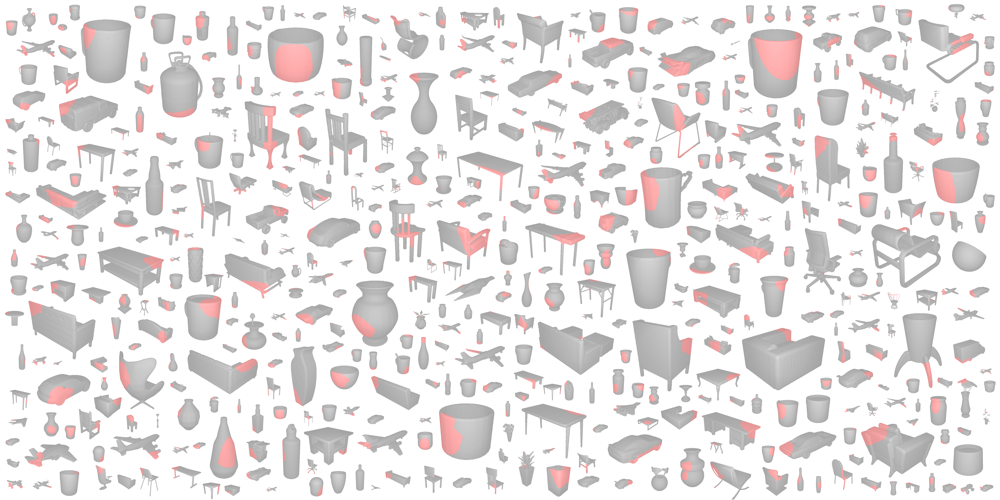

Nikolas Lamb,
Sean Banerjee, and
Natasha Banerjee
Terascale All-sensing Research Studio (TARS) at Clarkson University, USA
Our dataset contains 25,449 from ShapeNet and 1,042 objects from the Google Scanned Objects Dataset. We synthetically fracture each object by subtracting a subdivided and randomized geometric primitive from the object mesh.

@article{lamb2022deepjoin,
author = {Lamb, N. and Banerjee, S. and Banerjee, N. K.},
title = {DeepJoin: Learning a Joint Occupancy, Signed Distance, and Normal Field Function for Shape Repair},
year = {2022},
journal = {ACM Trans. Graph. (Proc. SIGGRAPH Asia)},
month = {jul},
}
@inproceedings{lamb2022deepmend,
title={DeepMend: Learning Occupancy Functions to Represent Shape for Repair},
author={Lamb, N. and Banerjee, S. and Banerjee, N. K.},
booktitle={European Conference on Computer Vision (ECCV)},
year={2022}
}
@article {mendnet2022,
journal = {Computer Graphics Forum},
title = {{MendNet: Restoration of Fractured Shapes Using Learned Occupancy Functions}},
author = {Lamb, Nikolas and Banerjee, Sean and Banerjee, Natasha K.},
year = {2022},
publisher = {The Eurographics Association and John Wiley & Sons Ltd.},
ISSN = {1467-8659},
DOI = {10.1111/cgf.14603}
}
@inproceedings{lamb2021using,
title={Using Learned Visual and Geometric Features to Retrieve Complete 3D Proxies for Broken Objects},
author={Lamb, Nikolas and Wiederhold, Noah and Lamb, Benjamin and Banerjee, Sean and Banerjee, Natasha Kholgade},
booktitle={Symposium on Computational Fabrication},
pages={1--15},
year={2021}
}